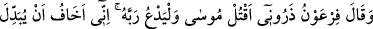
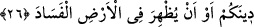
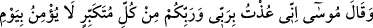
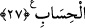
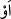

26. Firavun: Bırakın beni, dedi. Mûsâ’yı öldüreyim; (Kurtarabilirse) Rabbine
yalvarsın! Çünkü ben onun, dininizi değiştireceğinden, yahut yeryüzünde fesat
çıkaracağından korkuyorum.
“Firavun” adamlarına: “Bırakın beni de Mûsâ’yı öldüreyim.” Çünkü ben kesin
olarak biliyorum ki hükümranlığımın kaderi onun öldürülmesine bağlıdır. Firavun Mûsâ
(a.s)’ı öldürmeye karar verince Firavn’a: “Senin korktuğun adam bu değildir. Çünkü o
bunu yapamayacak kadar zayıf ve güçsüz! Senin mülkünü yıkacak kişi bir büyücüdür”
demişler. Ayrıca da: “Onu öldürdüğün zaman insanların aklına bir şüphe gelebilir.
Senin ona sözle karşı koymaktan aciz kalıp da silahları konuşturmayı tercih ettiğini
zannedebilirler” diyerek bizzat kendi adamları buna mâni olmuştu. Böylece lânetli
Firavun’a, onu Mûsâ’yı öldürmekten alıkoyanın bizzat kendi adamları olduğu, onlar
olmasa Mûsâ’yı kolaylıkla öldürebileceği şeklinde bir vehim verildi. Oysa onu
alıkoyan, içinde duyduğu müthiş korku idi. Mûsâ’nın gerçek bir peygamber olduğuna
kesin kanâat getirmişti. Onu öldürmesi durumunda hemen ilâhî helâke mâruz kalacağını
düşünüyordu.
“O,” bana mâni olması için kendisi tarafından gönderildiğini iddiâ ettiği “Rabbine
yalvarsın.” Firavun, görünürde Mûsâ’dan ama esasta Rabbine yalvarmasından
korkuyordu. Yoksa onun kendisi katında hiçbir ağırlığı yoktu. Nitekim bunu da
belirtiyordu. Mûsâ’yı öldürmediğim takdirde “onun, dininizi değiştireceğinden” yâni
içinde bulunduğunuz dini, ki bu din, Firavun’a kulluk etmekten ya da ona yaklaştırsın
diye putlara tapınmaktan ibaretti, “yahut yeryüzünde fesat çıkaracağından,” dininizi
tamamen değiştiremese bile iç savaş ve kargaşa çıkararak dünyanızı ifsâd edeceğinden
“korkuyorum.” “” edatı, iki şeyden birinin mutlaka gerçekleşeceğini belirtir.
Âyette işâret edildiği üzere Firavun, kalp körlüğünden dolayı, kendi gücü ve
kuvvetiyle Mûsâ’yı öldürmesi için Allah’ın onu kendisine bırakacağını yahut da onun
kavmini kendisine bırakacağını zannetmişti. Cenab-ı Hakk’ın Mûsâ ve kavmini
kurtarırken, hem kendisini hem de kavmini helâk edeceğini bilememişti. Baksanıza
dininin değiştirilmesinden ya da memleketinde fesad çıkarılmasından korkuyor da
kendisinin ve kavminin helâk edilivereceğinden ve her iki cihanda da perişan bir
duruma düşmekten hiç korkmuyor.
27. Mûsâ da: Ben, hesap gününe inanmayan her kibirliden, benim de Rabbim,